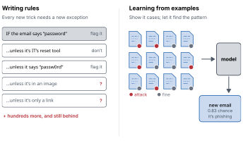
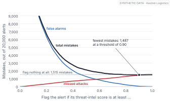
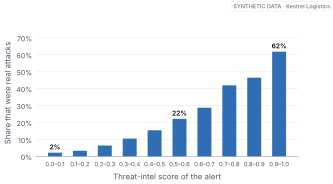
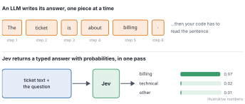
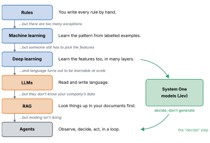

The question of whether a computer can think is no more interesting than the question of whether a submarine can swim.
— Edsger W. Dijkstra, 1984
If you’re trying to get into AI right now, you’ve probably seen these words everywhere:
AI. Machine learning. Deep learning. LLMs. RAG. Agents.
And lately, one more: Jev.
After a while, a quiet thought starts to form:
“Do I really need to learn all of this?”
Here’s the honest answer. You need less than you fear, but you need it in the right order. These words aren’t a list of separate subjects. They’re chapters of one story, and each one exists because the one before it ran into a wall.
So let’s walk the story. Slowly, with real examples, and without pretending you already know things you don’t.
By the end of this chapter
Tell the difference between a computer following rules and a computer learning.
Say what a model is, in one plain sentence.
Watch a machine learn something, and watch it learn the wrong thing.
Place AI, machine learning, deep learning, LLMs, RAG, agents and Jev on one map.
1.1 Start with a rule
Your thermostat is a good place to begin.
Somewhere inside it is a line that says, more or less:
If the temperature is above 100°F, send an alert.
That’s a computer following a rule. I told it exactly what to do. It didn’t figure anything out. It just checks a number and acts.
A surprising amount of software that gets called “AI” is exactly this. A bank that blocks card payments over a limit. A spam filter that bins any email containing “lottery”. An office system that marks you absent if you haven’t badged in by 10 a.m.
And here’s something people rarely say out loud: rules are good. They’re fast, they’re cheap, and when one goes wrong you can open it up and read exactly why. When a rule does the job, use the rule. We’ll come back to this in Chapter 13, where plain rules win more than one round of a contest against much fancier models.
The trouble starts when the world won’t sit still long enough for a rule.
1.2 When rules run out
Suppose I want a computer to recognise a cat.
I could try writing the rules. Two eyes. Four legs. Pointed ears. Fur. A tail.
But what if the cat is hiding behind a sofa and you can only see its tail? What if it’s black, on a black cushion, in a dark room? What if it’s a kitten, all head and no legs?
Every answer is another rule. Then every rule needs exceptions, and the exceptions need exceptions.
This isn’t only a cat problem. It’s the everyday problem of anyone who defends a company’s computers.
Picture the security team at Kestrel Logistics, a freight company we’ll follow through the whole book. They want to catch phishing emails, the ones that trick staff into typing a password into a fake page. So someone writes the obvious rule: if an email mentions “password”, flag it.
Monday, it flags IT’s own password-reset reminders. So they add an exception.
Wednesday, an attacker writes “passw0rd” with a zero. Another rule.
Friday, the attacker stops writing the word at all and puts it inside an image. Then they drop the text entirely and send a link to a shared document that looks exactly like the real ones.

Figure 1.1: Two ways to catch phishing. On the left, every new trick forces a new exception, and the list never catches up. On the right, we stop writing rules and show the computer labelled examples instead.
Figure fig-rules-vs-examples shows where this ends. The rulebook grows, and it’s always one trick behind, because the attacker gets to read your rules by testing them and you don’t get to read theirs.
1.3 Let the examples write the rules
So we flip the job around.
Instead of telling the computer every rule, we give it a pile of emails where we already know the answer. This one was phishing. This one was fine. This one was phishing. Thousands of them.
And we ask the computer to find the pattern that separates them.
That’s machine learning.
In one sentence: machine learning is getting a computer to work out the rules itself, from examples where the answer is already known.
You’ve been on the receiving end of this for years. When your bank texts “Did you just spend $640 at an electronics shop in another city?”, no one at the bank wrote a rule about you, that shop and that amount. A system learned what your normal spending looks like from millions of past payments, and this one didn’t fit. When Netflix puts a documentary at the top of your screen, it’s the same move. Nobody wrote “people who watched these three shows want this one”. The pattern came from examples.
1.4 So what’s a “model”?
You’ll hear the word model constantly, so let’s pin it down.
When the computer finishes studying the examples, what’s left behind is a thing that takes an input and produces an answer. Give it a new email, it says “phishing” or “fine”. Give it a payment, it says “normal” or “odd”. That thing is the model.
Think of it as a machine with a lot of knobs. Learning is the process of turning those knobs until the machine gets the examples right as often as possible. Once the knobs are set, you stop turning them and put the machine to work, on cases where nobody knows the answer yet. If you already knew the answer, you wouldn’t need the model.
So a model is what learning leaves behind: a function whose settings came from examples rather than from a programmer.
1.5 Meet the alerts
Before we go further, let’s get our hands on something real enough to learn from.
Kestrel Logistics has a small security operations centre, a SOC. Every system the company runs, from laptops and email to cloud storage and sign-ins, produces alerts: short, messy notes that say “this looked suspicious”. Over four weeks the SOC receives 20,000 of them. That’s about 714 a day, for a handful of analysts.
Most of them are nothing. Only 7.6% turn out to be real attacks.
I’ll be straight with you about one thing: Kestrel Logistics doesn’t exist. Every alert in this book comes from a generator I wrote, and the reason is a good one. With real security data you never know the true answer for sure, and you’re never allowed to publish it anyway. With synthetic data we know exactly what happened in every single case, which means we can check every model’s work, honestly, all book long.
Try it
Load the alerts and read one the way an analyst would.
from jevkit import socalerts = soc.load() # 20,000 synthetic alertsprint(len(alerts), "alerts")print(f"{alerts.malicious.mean():.1%} were real attacks")print(alerts.description[99])
20000 alerts
7.6% were real attacks
chen.fischer received 21 MFA push requests in 10 minutes; 1 approved. Time 2026-09-22 23:33. Threat intel score: 0.52. 1 related alert in the last 24h. Outside business hours.
Every row also carries the truth (malicious), which a real SOC would only learn later, if ever.
Look at that alert for a second. Someone received a flood of sign-in approval requests on their phone in the middle of the night, and one was approved. Attackers do exactly this: they spam your phone until you tap “yes” just to make it stop.
Real attack, or not? Hold that question. We’ll come back to this exact alert.
1.6 Learning, in its smallest form
Let’s make a machine learn something, right now, in about ten lines.
Every alert comes with a threat-intel score between 0 and 1. It’s a rough measure of how bad the outside world thinks the website, address or sender involved is. A reasonable-sounding rule would be: flag the alert if the score is at least some number, call it t.
But which t? 0.3? 0.5? 0.8?
We don’t guess. We try every value from 0 to 1, count how many mistakes each one makes on alerts where we know the answer, and keep the one with the fewest mistakes.
That’s it. That’s learning. Try settings, count mistakes, keep the best.
best threshold 0.90: 1,487 mistakes
flag nothing at all: 1,515 mistakes
Read those two lines again, because something has gone badly wrong.
The machine searched every threshold and found the one with the fewest mistakes. It picked 0.90, which means it flags only the alerts with the very worst scores. Almost nothing gets flagged. And a “strategy” of never flagging anything at all makes only a few more mistakes.

Figure 1.2: Every possible threshold, and the mistakes it makes. Low thresholds drown the team in false alarms; high ones miss attacks. The total bottoms out at the far right, barely below the dashed line for “flag nothing at all”.
Figure fig-threshold-search shows why. There are so many harmless alerts that every false alarm costs the rule more than a missed attack helps it. So the search slides the threshold up and up until it has almost stopped raising alarms. Of 1,515 real attacks, the “best” rule catches 73.
The machine learned exactly what we asked. We asked the wrong question.
This is the most useful failure in the whole book, and it hides two separate problems.
The first: we treated every mistake as equal. But letting a real attacker walk in and bothering an analyst for five minutes aren’t equal mistakes, not even close. Chapter 4 fixes this properly.
The second is quieter, and it’s the one this book is really about. We forced the answer to be yes or no.
Where this breaks
A learned model only knows the world its examples came from. If attackers invent a trick that isn’t in the training data, the model has never seen it, and it won’t tell you that it hasn’t. Its answer will look just as confident as always. Labels can be wrong too: analysts disagree, and some attacks are never discovered, so they sit in the data marked “fine”. A model will happily learn those mistakes as if they were truth.
1.7 The answer isn’t yes or no
Let’s look at the same data from a different angle. Instead of asking “attack or not?”, let’s ask: among alerts with a given score, how many turned out to be attacks?

Figure 1.3: Group the alerts by threat-intel score and count how many were real attacks. The share climbs steadily from 2% to 62%. Even at the very top, plenty of alerts are harmless, and even at the bottom, a few are attacks.
There’s no clean line where alerts switch from harmless to dangerous. Among the lowest-scoring alerts, about 2% were attacks. That sounds tiny, but that bucket holds 7,270 alerts, so it’s well over a hundred real attacks hiding among the quietest-looking noise. Among the highest-scoring alerts, 62% were attacks. Which means more than a third of the scariest-looking ones were nothing.
So what do we honestly know about an alert with a score of 0.55?
Not “it’s an attack”. Not “it’s fine”. What we know is: about one in five alerts like this one is an attack.
That number, a chance, carries far more than a yes or a no. It tells the analyst how worried to be. It lets you sort the queue so the likeliest attacks come first. And, as you’ll see in Chapter 4, it lets you set your line in the right place once you’ve decided what each kind of mistake costs.
A good model doesn’t just answer. It says how sure it is, and it’s right about how sure it is.
That last part, being right about how sure it is, has a name, and a whole part of this book to itself. For now, just notice that it’s a very different goal from “make the fewest mistakes”.
Set the threshold
A missed attack costs Kestrel roughly ten times what a false alarm costs. Should the threshold on the threat-intel score go up from 0.90 or down? Make a guess before you read on.
(Down, a long way. When a miss hurts more, you accept more false alarms to avoid one. Chapter 4 turns that intuition into a formula.)
1.8 Bigger problems, bigger models
Our threat-intel rule had it easy: someone handed it a single useful number. A photo is millions of pixels, and an email is a string of words. Nobody can hand-write the features for “this sounds like a scam”. So the next step was models that learn their own features, in many stacked layers. That’s deep learning (Chapter 5).
Train a very large deep-learning model on a huge amount of text, with one simple task, guess the next word, and it picks up grammar, facts and even some reasoning along the way. That’s a large language model, an LLM (Chapter 6).
LLMs know a lot about the world and nothing about your world, so we let them look things up before answering. That’s retrieval-augmented generation, or RAG. And once a model can read, the next wish is for it to do things: check a log, block an account, look at what happened, decide what to do next. A model working in that loop is an agent (Chapter 7).
1.9 Where Jev fits
Watch an agent work for a while and you notice something.
Most of its steps aren’t writing essays. They’re small decisions. Is this alert real? Which queue does this ticket go in? Is this action safe to take? Did that tool call work? Hundreds of little judgements, each with a known set of possible answers.
For each of those, the usual approach today is to ask an LLM, get a paragraph back, and then write code to dig the answer out of the paragraph. It works. It’s also a bit like hiring a novelist to tick a checkbox.

Figure 1.4: The same question, two ways. An LLM writes its answer out, piece by piece, and your code has to read the sentence. A decision model returns the answer as data, with a probability for every option, in one pass.
In September 2026, a start-up called TypeSafe AI released a model built for exactly those checkbox moments. It’s called Jev. It doesn’t write text at all. You give it the situation and a typed question, like “pick one of these labels” or “is this true, yes or no”, and it gives back the answer as data, with a probability attached to every option (Figure fig-generate-vs-decide). TypeSafe calls it a System One model, after the fast, intuitive kind of thinking described by the psychologist Daniel Kahneman, as opposed to slow, deliberate System Two thinking (Kahneman 2011). Part III takes Jev apart properly.
One thing you should know now, because it shapes every page that follows. I didn’t have access to the Jev API while writing this book. So everywhere you see Jev answer a question, the answer comes from jev-mock-synthetic, a stand-in I built that speaks Jev’s exact public interface through TypeSafe’s official Python library. The code is real. The numbers are synthetic, and every one of them is labelled that way.
Here’s your first question to it. Same alert as before, the flood of sign-in requests at night.
from typesafe_sdk import Noul, TypeSafeClientfrom jevkit import MockJevTransportclient = TypeSafeClient(api_key="mock", transport=MockJevTransport())r = client.system_one( state=alerts.description[99], questions={"attack": Noul( instructions="Is this alert a real attack?")},)print(r.model, round(r.nouls["attack"].noul, 2))print("really an attack?", bool(alerts.malicious[99]))
jev-mock-synthetic 0.68
really an attack? False
It thinks it’s probably an attack. It wasn’t. And that’s not a bug in the story, it’s the story.
A probability of 0.68 isn’t a promise. It’s a claim that among alerts like this one, roughly two out of three are attacks. This one happened to be in the other third. Whether a model’s “0.68” really does mean two out of three is something we can test, and we will, in Chapter 3 for ordinary models and in Chapter 11 for Jev.
All models are wrong, but some are useful.
— George E. P. Box, statistician, 1979
1.10 The map
So instead of memorising AI, ML, deep learning, LLMs, RAG, agents and Jev as seven separate things, think of them as a story.
We wanted computers to do intelligent things. Rules weren’t enough, so we taught machines from examples. As problems got harder, our models got bigger and started learning their own features. Some of them learned language. We gave them documents to read, then tools to use.
And now, inside those tools and loops, we’re finding that most of the work is deciding. Quickly, cheaply, and with an honest sense of how sure we are.

Figure 1.5: The story so far. Each step exists because the one before it hit a wall. System One models like Jev branch off deep learning and slot into the “decide” step of an agent.
You don’t need to understand every box today. Just know where we’re going. The next three chapters stay down at the bottom-left corner of this map on purpose, because everything above it, Jev included, is built on one idea we’ve only just met: a model’s answer should be a probability, and the probability should be honest.
Name one system you use every week that follows rules, and one that learned from examples. What gave it away?
In the lab, swap the threat-intel score for prior_alerts_24h (how many related alerts fired in the last day). Which threshold makes the fewest mistakes now? Is that rule any more useful?
Our best rule made 1,487 mistakes and caught almost nothing. Write one sentence describing the question you wish we had asked the machine instead.
Look at Figure fig-not-yes-no. If you could only review 300 alerts a day, how would you pick which 300? What would you need to know that the chart doesn’t show?
Next: that “how likely” idea. It sounds like a small change. It turns out to be the most important idea in the book, and it hides a trap that fools doctors, judges and security teams alike.
Kahneman, Daniel. 2011. Thinking, Fast and Slow. Farrar, Straus and Giroux.